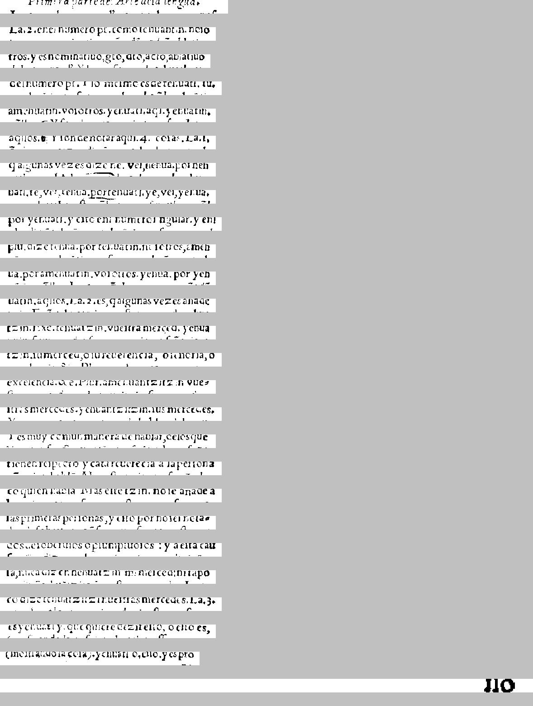

 , * * * * * * * * * * * * * * * * * * * * * * * * * * * * * * * * * * *  . 
        Primera Parte del Arte de la Lengua.

 1545-161545-161549519  P-169591691-1691-163.33939 
La. 2. en el number p†. como tehuantin. no|o

 1691-7169693.39.-1699.S6969691-1689-1691-1699 
tros. y es nominatiuo, gt˜o, dt˜o, act\~o, ablatiuo

 FF13, 16939"P* * * * * * * * * * * * * * * * * * * * * * * * * * * * * * * V- 
del number p†. Y lo me|mo es de tehuatl. tu. 

 4495." "-H."-79391196-754."-"-"-"), FH." ""- 
amehu\~atin. vo|otros. yehuatl. a\~ql. yehu\~atin.

 91-16961 * * * * * * * * * * * * * * * * * * * * * * * * * * * * * * * * 
a\~qllos. ¶Y |on de notar aqui. 4. co|as. La. 1.

 * * * * * * * * * * * * * * * * * * * * * * * * * * * * * *".l H,969 
\~q algunas vezes diz\~e ne. vel, nehua. por neh

 " "H-16. X' *." H." ESTES" ""-76-X63-76-H194. 
uatl. te, vel, tehua. por tehuatl. ye, vel, yehua.

 P93  761?" "H-71"F194. H.'"US! "S"-"-7134! 
por yehuatl. y e|to e\~nl numero |ingular. y e\~nl

 I-"-"'SS* * * * * * * * * * * * * * * "-H"-"5,46"S-1959 
plu, diz\~e tehu\~a. por tehu\~atin. no|otros, ameh

 144-PS156."-"H." "-XV3. "F6-75"H" P94.) "" 
u\~a. por amehu\~atin. vo|otros. yehu\~a. por yeh

 "-"H.-"-"?-' "-F-S"'S" "-X6698-"" "* 
u\~atin. a\~qllos. La 2. es, \~q algunas vezes a\~nad\~e

 * * * * * * * * * * * * * * * * * * * * * * XVU11693US. 53. 76"Vi! 
tzin. Ex\~e. tehuatzin. vue|tra merced. yehua

 * * * * * * * * * * * * * * * * * * * * * * * * * * * * * * * * * * * * * * * * * * * * * * 9 
tzin. |u merced, o |u reuerencia, o |e\~noria, o

 * * * * * * * * * * * * * * * * * * * * * * * * * * * * * * * * * * * * * * * * * * * * 
excelencia. &e. Plur. amehuantzitzin vue-

 * * * * * * * * * * * * * * * * * * * * * * * * * * * * * * * * * * * * * * * * * * * * * * * * 
|tras mercedes. yehuantzitzin. |us mercedes.

 * * * * * *"Y, "S"-"H333-"H" "6."-"H375964.-"6 
Y es muy comun manera de hablar, de los que

 14. 1361-353.P5,5.69 7691-1691-161 -P936."* 
tienen re|pecto y cat\~arcuer\~ecia a la per|ona

  * * * * * * * * * * * * * * * * * * * * * * * * * * * * * * * 9935 .494964 
c\~o quien habl\~a Mas e|te tzin. no |e a\~nade a

 !" T\'i?" ". "S\'i"-1699.-71119  1691-16939.-F* * * 
las primeras per|onas, y e|to por no |er nota-

 * * * * * * * * * * * * * * * * * * * * * "Fil-"H66  67  9914699 
dos de |oberuios o \~p|umptuo|os: y a e|ta cau

 ! - 1.""""""1686". "? "69169691.!" P9 
|a, nu˜ca diz en nehuatzin. mi merced: ni t\~apo

 9 - 1691-1615693916966.15453- 
co diz\~etehu\~atzitzin nue|tras mercedes. La. 3.

 1675.""51. 7.-11691-1695."1691-1697. 9111916, 
es yehuatl y. que quiere dezir e|to, o e|to es,

 1. "'S-"-"H* * * * * * * *7591691-169395766 P69 
(mo|trando la co|a). yehuatl o, e||o. y es pro

                                IZCI 
                        no


===============================================


 [latin , * ][spanish * * * * * * * * * * * * * * * * * * * * * * * * * * * * * * * * * *  . 
 1545-161545-161549519  P-169591691-1691-163.33939 
 1691-7169693.39.-1699.S6969691-1689-1691-1699 
 FF13, 16939"P* * * * * * * * * * * * * * * * * * * * * * * * * * * * * * * ][latin V- 
 4495." "-H."-79391196-754."-"-"-"), FH." ][spanish ""- 
 91-16961 * * * * * * * * * * * * * * * * * * * * * * * * * * * * * * * * 
 * * * * * * * * * * * * * * * * * * * * * * * * * * * * * *".l ][nahuatl H,969 
][null  [latin " "H-16. X' *." H." ESTES" ""-76-X63-76-H194. 
 P93  761?" "H-71"F194. H.'"US! "S"-"-7134! 
 I-"-"'SS* ][spanish * * * * * * * * * * * * * * ][latin "-H"-"5,46"S-1959 
 144-PS156."-"H." "-XV3. "F6-75"H" P94.) "" 
 "-"H.-"-"?-' "-F-S"'S" "-X6698-"" "* 
 ][spanish * * * * * * * * * * * * * * * * * * * * * * ][latin XVU11693US. 53. 76"Vi! 
 * ][spanish * * * * * * * * * * * * * * * * * * * * * * * * * * * * * * * * * * * * * * * * * * * * * ][nahuatl 9 
][null  [latin * ][spanish * * * * * * * * * * * * * * * * * * * * * * * * * * * * * * * * * * * * * * * * * * * 
 * * * * * * * * * * * * * * * * * * * * * * * * * * * * * * * * * * * * * * * * * * * * * * * * 
 * * * * * *"Y, ][latin "S"-"H333-"H" "6."-"H375964.-"6 
 14. 1361-353.P5,5.69 ][spanish 7691-1691-161 -P936."* 
  * * * * * * * * * * * * * * * * * * * * * * * * * * * * * * * ][nahuatl 9935 .494964 
 ][spanish !" T\'i?" ". "S\'i"-1699.-71119  1691-16939.-F* * * 
 * * * * * * * * * * * * * * * * * * * * * ][latin "Fil-"H66  67  9914699 
][null  [spanish ! - 1.""""""1686". "? "69169691.!" P9 
 9 - 1691-1615693916966.15453- 
 1675.""51. 7.-11691-1695."1691-1697. ][latin 9111916, 
 1. "'S-"-"H* ][spanish * * * * * * *7591691-169395766 ][nahuatl P69 
                                IZCI 


<table><tr><td>
<font face="courier"> 
</br></br></br></br></br>
</br></br>

 <font color="Red">, * </font><font color="Blue">* * * * * * * * * * * * * * * * * * * * * * * * * * * * * * * * * *  . </br>
 1545-161545-161549519  P-169591691-1691-163.33939 </br>
 1691-7169693.39.-1699.S6969691-1689-1691-1699 </br>
 FF13, 16939"P* * * * * * * * * * * * * * * * * * * * * * * * * * * * * * * </font><font color="Red">V- </br>
 4495." "-H."-79391196-754."-"-"-"), FH." </font><font color="Blue">""- </br>
 91-16961 * * * * * * * * * * * * * * * * * * * * * * * * * * * * * * * * </br>
 * * * * * * * * * * * * * * * * * * * * * * * * * * * * * *".l </font><font color="Olive">H,969 </br>
</font><font color="Black"> <font color="Red">" "H-16. X' *." H." ESTES" ""-76-X63-76-H194. </br>
 P93  761?" "H-71"F194. H.'"US! "S"-"-7134! </br>
 I-"-"'SS* </font><font color="Blue">* * * * * * * * * * * * * * </font><font color="Red">"-H"-"5,46"S-1959 </br>
 144-PS156."-"H." "-XV3. "F6-75"H" P94.) "" </br>
 "-"H.-"-"?-' "-F-S"'S" "-X6698-"" "* </br>
 </font><font color="Blue">* * * * * * * * * * * * * * * * * * * * * * </font><font color="Red">XVU11693US. 53. 76"Vi! </br>
 * </font><font color="Blue">* * * * * * * * * * * * * * * * * * * * * * * * * * * * * * * * * * * * * * * * * * * * * </font><font color="Olive">9 </br>
</font><font color="Black"> <font color="Red">* </font><font color="Blue">* * * * * * * * * * * * * * * * * * * * * * * * * * * * * * * * * * * * * * * * * * * </br>
 * * * * * * * * * * * * * * * * * * * * * * * * * * * * * * * * * * * * * * * * * * * * * * * * </br>
 * * * * * *"Y, </font><font color="Red">"S"-"H333-"H" "6."-"H375964.-"6 </br>
 14. 1361-353.P5,5.69 </font><font color="Blue">7691-1691-161 -P936."* </br>
  * * * * * * * * * * * * * * * * * * * * * * * * * * * * * * * </font><font color="Olive">9935 .494964 </br>
 </font><font color="Blue">!" T\'i?" ". "S\'i"-1699.-71119  1691-16939.-F* * * </br>
 * * * * * * * * * * * * * * * * * * * * * </font><font color="Red">"Fil-"H66  67  9914699 </br>
</font><font color="Black"> <font color="Blue">! - 1.""""""1686". "? "69169691.!" P9 </br>
 9 - 1691-1615693916966.15453- </br>
 1675.""51. 7.-11691-1695."1691-1697. </font><font color="Red">9111916, </br>
 1. "'S-"-"H* </font><font color="Blue">* * * * * * *7591691-169395766 </font><font color="Olive">P69 </br>
                                IZCI </br>
</font></font><br/><br/><br/>
<font color="Black">null</font></br>
<font color="Blue">spanish</font></br>
<font color="Red">latin</font></br>
<font color="Olive">nahuatl</font></br>
</td><td>
</td></tr></table>


CER: 1.0465116279069768
CER, allow f->s: 1.0465116279069768
WER, keep punc: 2.161764705882353
WER, keep punc, allow f->s: 2.161764705882353
WER, remove punc: 0.9950980392156863
WER, remove punc, allow f->s: 0.9950980392156863
